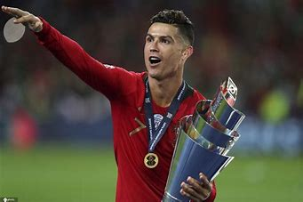
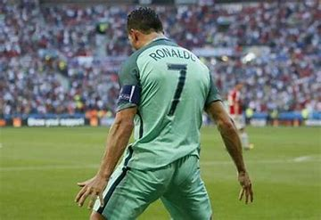
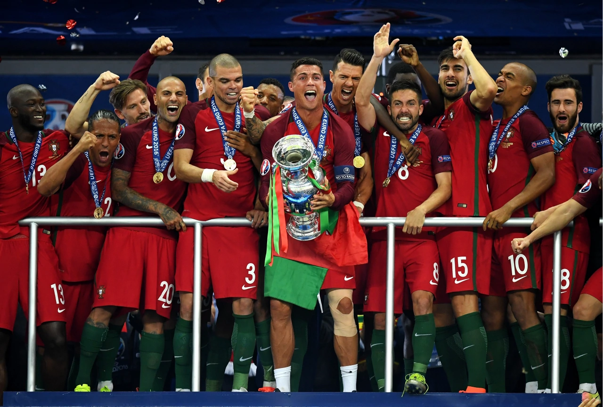
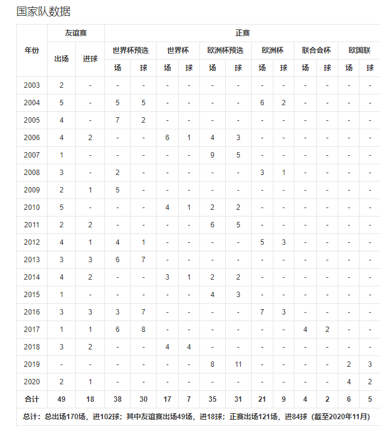

克里斯蒂亚诺·罗纳尔多个人介绍足球传奇职业数据个人集锦图片欣赏新闻动态国家队生涯登陆国家队生涯
葡萄牙足球国家队  2001年2月24日，C罗入选葡萄牙U15国家队；2001年10月10日，C罗入选葡萄牙U17国家队；2002年11月19日，C罗入选葡萄牙U21国家队；2003年6月11日，C罗入选葡萄牙U20国家队；2003年8月20日，C罗在对哈萨克斯坦的友谊赛中首次代表国家队上场；2004年8月12日，C罗入选葡萄牙国家奥林匹克队 [201-202] ；2007年2月6日，C罗在葡萄牙对阵巴西的友谊赛中，首次被任命为葡萄牙国家队队长 [203] 。
2004年6月12日，2004年葡萄牙欧洲杯揭幕战中，希腊队2:1战胜葡萄牙的比赛中，C罗为葡萄牙打进唯一1球 [204] ；6月30日，该届欧洲杯半决赛，葡萄牙2:1淘汰荷兰，历史上首次进入欧洲杯决赛，第26分钟，C罗头球破门，并在第59分钟助攻马尼切远射得分 [205] ；但在7月4日举行的决赛中负于希腊队 [206] ，C罗凭借自己的表现入选2004年欧洲杯最佳阵容及最佳新人奖 [207] 。同年，C罗随葡萄牙国家奥林匹克足球队征战雅典奥运会，但成绩不佳，小组未出线 [202] 。10月13日，2006年德国世界杯欧洲区预选赛C组，葡萄牙对阵俄罗斯，C罗在第39分钟、第69分钟的2粒进球帮助球队最终7:1战胜对手 [208] ，在该届世界杯预选赛中，C罗共计打入7粒进球 [201] 。 2006年6月17日，2006年德国世界杯D组第二场，葡萄牙2:0击败伊朗，C罗在第79分钟主罚点球命中，攻入他个人在世界杯正赛的第一粒进球 [209] ，葡萄牙最终在该届世界杯中获得第四名 [210] ，C罗个人入选最佳新秀奖 [211] 。10月7日，2008年奥地利瑞士欧洲杯预选赛A组，葡萄牙3:0击败阿塞拜疆的比赛中，第24分钟，德科外围中路斜传禁区左侧，C罗跟进劲射破门，第63分钟，西芒·佩德罗·丰塞卡·萨布罗萨右翼传中，后点的C罗鱼跃冲顶破门。 2007年3月24日，欧洲杯预选赛A组，葡萄牙4:0战胜比利时的比赛中，C罗梅开二度帮助球队获胜，该届欧洲杯预选赛中，C罗共计打入8粒进球 [201] 。2008年奥地利瑞士欧洲杯正赛期间，葡萄牙在1/4比赛中2:3败给德国队，被挡在四强门外 [212] 。 2010年6月21日，2010年南非世界杯G组第二场，葡萄牙7:0朝鲜，C罗在第87分钟攻入他在该届世界杯的唯一进球 [361] ，最终葡萄牙队未入八强 [360] 。2011年9月2日，2012年波兰乌克兰欧洲杯预选赛H组，葡萄牙4:0战胜塞浦路斯的比赛中，第35分钟，C罗主罚点球命中；第82分钟，C罗禁区左肋射远角进球，并在第85分钟，助攻乌戈·阿尔梅达 [214] 。但最终葡萄牙未能在预选赛中晋级，不得不参加附加赛 [215] 。11月15日，葡萄牙在附加赛第二场中，6:2战胜波黑，取得参加该届欧洲杯正赛资格，C罗在第7分钟主罚任意球破门，第53分钟，C罗反越位带球突进近40米禁区内摆脱出击的门将推射空门得手 [216] 。 2012年6月17日，2012年波兰乌克兰欧洲杯正赛B组小组赛，葡萄牙2:1胜荷兰，C罗在该场比赛中攻入2球，葡萄牙获得小组第二晋级淘汰赛圈 [217] ；6月27日，葡萄牙在击败捷克后，半决赛对阵西班牙，双方在120分钟内0:0战平，点球大战中西班牙胜出，葡萄牙最终止步于欧洲杯四强 [218] ，C罗个人入选2012年欧洲杯最佳阵容（前锋） [219] 。  2013年9月6日，2014年巴西世界杯欧洲区预选赛F组，葡萄牙4:2逆转击败北爱尔兰，第67分钟，C罗接应队友开出的角球前点跃起头球破门；第76分钟，法比奥·科恩特朗左路将皮球吊入禁区，中路C罗跃起头球破门；第81分钟，C罗主罚直接任意球完成他在国家队的首个帽子戏法 [220] 。世界杯预选赛附加赛葡萄牙对阵瑞典，首回合C罗绝杀进球帮助葡萄牙1:0取胜，11月19日次回合，第51分钟，C罗超车突入禁区，16米处左脚推射远角进球；第77分钟，阿尔梅达分球给C罗，C罗突入禁区左侧，小角度右脚低射破门；第79分钟，若奥·穆蒂尼奥反击中送出直塞，C罗突入禁区右侧趟过门将小角度推射破门；C罗国家队进47球追平保莱塔，成为葡萄牙队史射手王 [221] 。 2014年巴西世界杯正赛期间，C罗还是带伤打满了三场小组赛，最终以0:4输给德国、2:2打平美国、2:1战胜加纳，因为净胜球少于美国而出局 [222] 。 2015年6月13日，2016年法国欧洲杯预选赛，I组第5轮葡萄牙队3:2逆转战胜亚美尼亚，小组赛4连胜，C罗上演帽子戏法 [223] ，葡萄牙晋级正赛。2016年6月22日，2016年法国欧洲杯F组小组赛第三场，C罗2次扳平比分，最终葡萄牙队3:3战平匈牙利，打进16强 [224] ；7月10日，该届欧洲杯决赛，葡萄牙队1:0击败法国，历史上首次夺冠，成为欧洲杯历史上第10个冠军国家队 [225] 。C罗个人获得欧洲杯银靴奖 [226] ；入选欧洲杯最佳阵容（前锋） [227] 。 2016年10月7日，2018年俄罗斯世界杯欧洲区预选赛B组第二场，C罗在葡萄牙对阵安道尔的比赛中攻入4球，最终葡萄牙6:0战胜对手 [228] ；11月13日B组第四场；葡萄牙4:1击败拉脱维亚的比赛中，C罗攻入2球 [229] ；2017年3月25日B组第五场，葡萄牙3:0胜匈牙利，C罗梅开二度，国家队进球数达到70粒 [230] ；6月10日B组第六场，第41分钟，C罗门前头球冲顶破门，第63分钟，C罗门前再次头球破门，第68分钟，C罗助攻安德烈·席尔瓦破门，最终葡萄牙3:0击败拉脱维亚 [231] ；8月31日B组第七场，葡萄牙5:1胜法罗群岛的比赛中，C罗攻入3球 [232] 。 2018世界杯对阵西班牙 2018世界杯对阵西班牙 2018年6月16日，2018年俄罗斯世界杯正赛小组赛B组第一场，葡萄牙对阵西班牙，第4分钟，C罗主罚点球将球打进；第43分钟，C罗外围打门，大卫·德赫亚脱手，C罗梅开二度；第87分钟，C罗任意球直接破门；最终两队3:3战平 [233] 。最终葡萄牙在该届世界杯比赛中，止步16强 [234] 。 2019年6月6日，欧洲国家联赛决赛阶段，葡萄牙队3:1击败瑞士，C罗个人攻入3粒进球，葡萄牙晋级决赛 [235] ；6月9日，2018-19赛季欧洲国家联赛决赛，葡萄牙1:0战胜荷兰，获得第1届欧洲国家联赛冠军 [17] 。9月11日，2020年欧洲足球锦标赛预选赛B组第二场，葡萄牙对阵立陶宛，C罗攻入4球，球队最终5:1战胜对手 [236] ；11月15日，葡萄牙6:0胜立陶宛，C罗又攻入3球 [237] ，最终葡萄牙晋级2020年欧洲杯正赛 [238] 。 2019年欧国联冠军 2019年欧国联冠军 2020年9月9日，欧国联A级C组第2轮小组赛，葡萄牙客场2:0战胜瑞典。第45分钟，C罗直接任意球破门，打进个人国家队第100球，成为首位完成国家队百球成就的欧洲球员。第72分钟C罗远射梅开二度，距离阿里·代伊109球的国家队进球纪录还有8球 [240] 。 2021年6月15日，2020欧洲杯F组首轮，C罗梅开二度，帮助葡萄牙队3:0战胜匈牙利队 [239] 。本场比赛结束之后，C罗成为历史上首位5次参加欧洲杯且出场的球员。同时C罗以11粒欧洲杯正赛进球超越普拉蒂尼，成为欧洲杯历史射手王 [241] 。6月23日，小组赛末轮，C罗打入两粒点球，帮助葡萄牙队2:2战平法国队晋级淘汰赛，追平阿里·代伊109球的国家队进球纪录 [242] 。整届欧洲杯中，C罗出场4次，打进5球并完成1次助攻，荣膺欧洲杯金靴奖（最佳射手） [323] 。9月1日，2022年卡塔尔世界杯欧洲区预选赛，C罗下半场最后时刻攻入两粒进球，帮助葡萄牙队2:1逆转击败爱尔兰队。至此，C罗代表葡萄牙国家队正式比赛进球数达到111个，超越打入109个国家队进球的伊朗退役球员阿里·代伊，成为世界男足国家队历史第一射手 [330] 。10月9日，C罗第181次出战国家队比赛，超越拉莫斯（180场），成为国家队出战场次最多的欧洲球员 [335-336] 。 2022年3月29日，2022年世预赛欧洲区附加赛决赛，葡萄牙主场2:0战胜北马其顿，C罗助攻B费破门，帮助葡萄牙晋级2022年卡塔尔世界杯决赛圈 [343] 。6月6日，2022/23欧国联A2组第2轮，葡萄牙4:0胜瑞士，C罗攻入两球，第35分钟，迪奥戈·若塔回传，跟进的C罗15码处抽射破门；第39分钟，努诺·门德斯传球，若塔小禁区左侧低射被扑出，C罗近距离补射入网 [362] 。该场比赛是他代表葡萄牙队188次出场，刷新自己保持的葡萄牙队史出场纪录+欧洲国家队出场纪录，比赛中攻入的进球也是他在国家队打入的117球，职业生涯已经打入815球（俱乐部698球），两项数据都继续刷新自己保持的足坛历史纪录 [363] 。   |